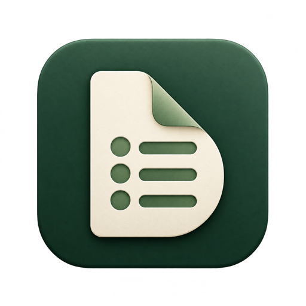
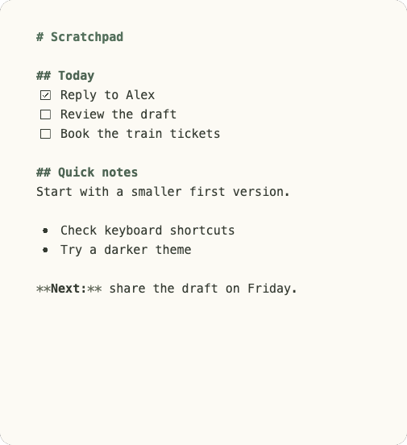
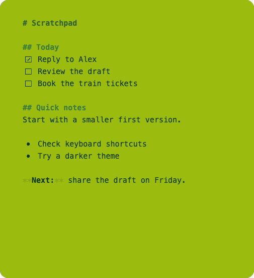
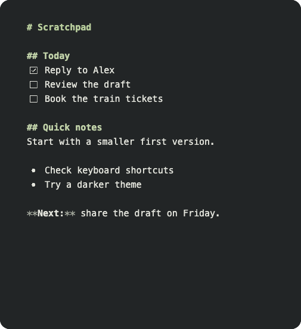
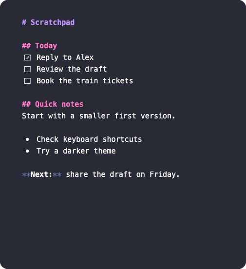
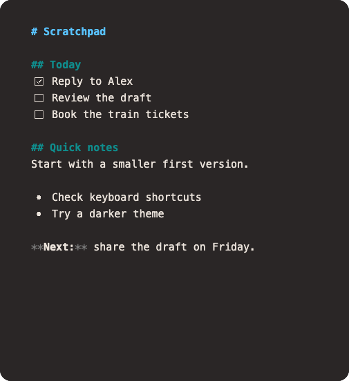

A fresh page, one shortcut away.
Start a scratchpad with ⌘N or Ctrl+N. Write a list, leave a reminder, or start a draft. Markdown keeps it familiar.

bulletnotes.Native Markdown scratchpad
In development
A task. A thought. A rough first draft.
A small scratchpad to
get it down and keep going.



01 / A small tool. A clear purpose.
Start a scratchpad with ⌘N or Ctrl+N. Write a list, leave a reminder, or start a draft. Markdown keeps it familiar.
Your edits save locally as you type. Keep working without a connection and return to your notes later.
Browse your scratchpads or search for a phrase. Cached notes stay available offline.
02 / Same scratchpad. Different energy.
Pick a palette. Choose your paper.
Make yourself at home.


03 / A place in your bigger picture.
Use Bulletnotes for local scratchpads. Connect your own SilverBullet server when you want to bring them into your existing notes.
Quick Notes/
Add your server address and token in Settings. Scratchpads sync when your server is available, and you can search and open pages from your space.
Meet SilverBullet⌘ on macOS. Ctrl on Windows and Linux.
Currently in development
Give it a place. Build Bulletnotes from source, or follow the releases page for development downloads.
No published builds yet. Development builds, when available, are not production releases.